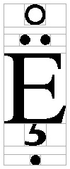
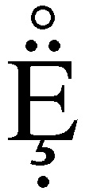
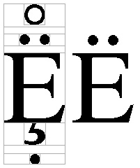
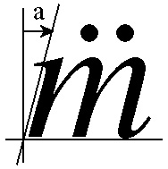
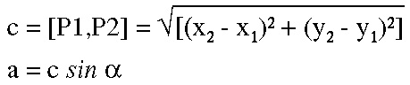

|
|
| Version | 1 |
| Authors | Rick McGowan |
| Date | 2002-07-15 |
| This Version | http://www.unicode.org/notes/tn2/tn2-1.html |
| Previous Version | [none] |
| Latest Version | http://www.unicode.org/notes/tn2 |
This document discusses a generalized method for the display of arbitrary combinations of combining mark glyphs (accents or diacritics) with respect to some base glyph. This is useful in solving the problem of displaying such arbitrary sequences without specialized metrics or other font support.
This document is a Unicode Technical Note. It is supplied purely for informational purposes and publication does not imply any endorsement by the Unicode Consortium. For general information on Unicode Technical Notes, see http://www.unicode.org/notes.
In any implementation of textual rendering with Unicode characters, the problem of placing arbitrary combining marks, typically accents and diacritical marks, inevitably arises. This problem has often been thought of as a difficult one to solve. Some implementations simply don't face the problem, and will render only pre-composed glyphs for pre-composed characters, or in other words, retain the one-to-one character to glyph processing model of older TTY style implementations. Other implementations are willing to look up combinations of base characters and combining marks, and render the combination only if a pre-composed glyph for the combination occurs in the font.
For a wide variety of combinations of base character augmented by an arbitrary number of combining marks of several types, it is actually not difficult to render a legible combination even in the absence of specific metrics pertaining to each glyph. For many purposes such an approach yields results that are quite acceptable, even if not a perfect typographical solution. Typographers may cringe, but the method gets results that are more useful than nothing.
The remainder of this paper discusses a general method for rendering any combination of one or more combining marks with respect to any base character. This approach is quite useful for a variety of scripts, including the following: Latin, Greek, Cyrillic, Armenian, Georgian, IPA, Letterlike Symbols, Dingbats, Cherokee, Runic, and even Chinese characters. The combining marks for which this method is useful include nearly all of the Latin-derived combining marks in the U+0300 block as well as many script-specific characters, such as nuktas (for example, U+0A3C GURMUKHI SIGN NUKTA). Furthermore, this method can be used with scripts such as Tibetan as a fall-back mechanism for arbitrary stacking in the absence of good metrics for particular combinations.
Most combining marks are centered horizontally with respect to the character they are placed upon. The acute accent and umlaut are two common examples. This method primarily treats this type of mark, but can be extended to marks that are not centered by applying slight modifications.
Most combining marks fall into two very general classes with respect to their placement: those that are above the character and those that are below. Each of these classes can likewise be one of two sub-classes: those that are attached to the base character -- such as the cedilla -- and those that are detached from the base character -- such as the umlaut. In all, we have four major classes:
| Class | Example | Comb. Class Example |
| above the base character, detached | acute | 230 |
| above the base character, attached | (no examples) | 214 |
| below the base character, detached | cedilla | 220 |
| below the base character, attached | dot-below | 202 |
Chapter 4 of the Unicode Standard contains an exhaustive table of combining marks and makes finer distinctions among types, but for our purposes, these suffice to show the general principles of the method.
Most scripts to which the common combining marks apply are alphabetic scripts of the bi-cameral type. Some, like Cherokee, are uni-cameral. In their traditional type designs, nearly all of them have the concept of the "capital height" for majuscule letters, and an "x-height" or minuscule letter ascent. This method makes use of the capital height, or "cap-height" as a basic unit of measurement.
Each glyph in a font has a bounding rectangle -- the smallest rectangle that completely encloses the outline of the glyph. Each glyph also has an advance width. This is usually just called "width" and is separate from, and usually wider than, a glyph's bounding rectangle.
The general method of placing a combining mark with respect to a base is to horizontally center the mark, then to place it above or below the base, with or without a "gap" between the character depending on the mark's type. The difficulties usually encountered in actually performing such a simply stated task are (A) calculation of a relation between the bounding rectangles of the glyphs, and (B) calculation of the "gap" between characters and detached combining marks.
All modern application platforms have means of querying fonts for various properties for each of the glyphs. This information always includes a bounding rectangle and a width, at least. Other metrics and various tables may be available in some fonts, but not all. We will rely only on knowing the bounding rectangle and width of each glyph, and the cap-height of the font.
Assume that we have a stream of glyphs which has been generated from a character stream. Assume those glyphs have already been "rationalized" such that for character combinations involving combining marks for which pre-composed glyphs exist, the pre-composed glyphs are already present in the stream. Thus, the only glyphs left in the stream which need to be combined are those for which no pre-composed glyph is present in the font. (The glyphs may be from different fonts as well.) The remainder of this discussion ignores the font parameter; it is understood to be present, but is omitted for clarity.
This method renders the bounding rectangle of the combining mark glyphs relative to the bounding rectangle of a base glyph, or a dynamically calculated base unit consisting of a base glyph and previous combining mark glyphs within the stream.
Assumptions of the algorithm:
Assume that the base character is to be rendered at the origin point on Cartesian plane. The bounding rectangle of this and all other glyphs is relative to (0,0). Our example deals with Postscript fonts, which usually have associated metric information in a form like this (for the standard Adobe Times-Roman font):
... FontBBox -168 -218 1000 898 CapHeight 662 ... C 69 ; WX 611 ; N E ; B 12 0 597 662 ; C 81 ; WX 722 ; N Q ; B 34 -178 701 676 ; C 199 ; WX 333 ; N dotaccent ; B 118 523 216 623 ; C 200 ; WX 333 ; N dieresis ; B 18 523 315 623 ; C 202 ; WX 333 ; N ring ; B 67 512 266 711 ; C 203 ; WX 333 ; N cedilla ; B 52 -215 261 0 ; ...
Postscript "bounding boxes" are given in terms of two points, the lower left and upper right. We convert these to "rectangles" expressed in terms of origin and size. The bounding rectangles for the glyphs in the example above are:
Times-Roman bounding rects = (x, y, w, h) E rect = (12, 0, 585, 662) Q rect = (34, -178, 667, 854) Diaeresis rect = (18, 523, 297, 100) Ring rect = (67, 512, 259, 100) Cedilla rect = (52, -215, 209, 215)
For any of the combining marks under discussion, the X coordinate at which they are to be rendered is calculated as follows:
Xpoint = (BaseRect.x - MarkRect.x) + ((BaseRect.w - MarkRect.w) / 2);
The Y coordinate depends on whether the mark is above or below the base glyph, and in either case is calculated as follows:
if (the mark is above the base) {
Ypoint = ((BaseRect.y + BaseRect.h) + TheGap) - MarkRect.y;
} else {
Ypoint = BaseRect.y - MarkRect.y - MarkRect.h - TheGap;
}
You may ask how the gap is calculated. This is a heuristic measurement, but for most purposes I have found that a gap of 1/8 the cap-height of a font is fairly reasonable and yields good results across a great variety of fonts. (For vertically stretched fonts, a smaller value such as 1/10 might be appropriate. If no cap-height measurement is available, a value of 1/12 the em-square might be appropriate, as cap-heigh generally varies from about 65% to 70% of the em-square.) For purposes of calculation, the above formula always includes the variable "TheGap", but in each case this should be calculated depending on whether the mark is attached or not, as follows:
if (the mark is detached from the base) {
TheGap = (CapHeight / 8);
} else {
TheGap = 0;
}
In processing, as each combining mark is encountered in turn, the algorithm calculates the bounding rectangle of the entire combination that has just been rendered, and renders the next combining mark glyph relative to that rectangle. That is, for each combination of base glyph with all of its combining marks, perform the following steps:
combination_bounding_rect = base_bounding_rect;
display the base glyph at (0,0);
while (more marks) {
display the mark relative to combination_bounding_rect;
increase combination_bounding_rect by
the extent of mark_bounding_rect;
}
move horizontally by the width of the base glyph;
Accompanying this paper are two files, pseudo-c-render.txt and perl-render.pl.
This is a C-like pseudo-code implementation of the algorithm for an entire stream of glyphs. The main loop runs through a stream, and for each sequence of base and combining marks, loops over the combining marks while calculating the increased bounding rectangle of each additional mark.
This is an implementation in Perl with the loop "unrolled" into a sequence of steps. The output of this program yields a Postscript program which, if rendered to a Postscript printer, produces a picture of the letter "E" with various combining marks attached to it. At each step along the way, a gray box is drawn around the component, and as the increasing bounding rectangles are calculated, they are likewise outlined in gray. The result of an application looks like the figure below (first with, then without surrounding boxes):
|  |  |
A comparison of that result with the precomposed glyph for capital E with dieresis in the same font is shown below:

A further refinement of this algorithm deals somewhat intelligently with placement of combining marks in italic fonts. It can be easily verified that if the above algorithm is applied to italics, the result looks visually awkward because the marks are not placed visually with respect to the italic angle, but with the bounding rectangle. Ideally, the marks would be moved slightly to the right by an amount dependent on the italic angle of the base glyph's font and the height of the mark above the base glyph. The diagrams below illustrate the following discussion.
|  |  |
As a trivial example, consider placing an umlaut over the Latin lower-case "m". The italic angle of the font is "alpha" degrees, and the base of the umlaut is at height b above the baseline. The horizontal adjustment required to visually center the umlaut is length a, as shown in the triangle diagram above.
The distance a which the umlaut must be moved rightward is c × sin α. To find that, first solve for c, the distance from P1 to P2, where P1 is the origin of the base bounding rectangle and P2 is the lower left corner of the umlaut glyph. The formulae follow:

In the italic case, before rendering the umlaut with the method above, simply calculate a and add it to the result as follows:
Xpoint = (BaseRect.x - MarkRect.x) + ((BaseRect.w - MarkRect.w) / 2.0);
if (the font is italic) {
// calculate a with respect to italic angle
Xpoint += a;
}
Both Truetype and Postscript fonts contain a metric for the italic angle from which the angle α can be derived.
The methods outlined here work well with a variety of fonts, many scripts, and most combining marks. It is particularly well-suited to application with simple alphabetic scripts and characters in the U+0300 block. An actual implementation for production use would of course include specific reference to fonts and other details.
Because there are a variety of combining marks that are placed in positions other than horizontally centered, an actual implementation would probably account for these by modifications of the centering algorithm presented above.
The following summarizes modifications from the previous version of this document.
| 1 | Initial version |
Copyright © 2002. All Rights Reserved. The Unicode Consortium makes no expressed or implied warranty of any kind, and assume no liability for errors or omissions. No liability is assumed for incidental and consequential damages in connection with or arising out of the use of the information or programs contained or accompanying this technical note.
Unicode and the Unicode logo are trademarks of Unicode, Inc., and are registered in some jurisdictions.